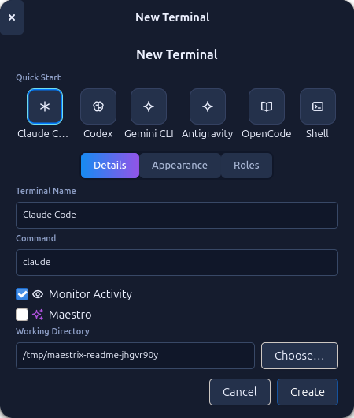

Terminals are real PTYs owned by the Maestrix server and displayed with VTE. You can run any command, and Maestrix adds agent-aware features on top.

Presets#
The New Terminal dialog offers one-click presets:
| Preset | Command |
|---|---|
| Claude Code | claude |
| Codex | codex |
| Gemini CLI | gemini |
| Antigravity | agy --dangerously-skip-permissions |
| OpenCode | opencode |
| Shell | bash |
Each terminal also has a name, a command, a working directory, an icon and a colour, an activity monitor toggle and the Maestro toggle (see Maestro Mode). Presets live in ~/.open-maestri/preferences.json and can be edited in Preferences → Agents.
Skipping permission prompts
The Antigravity preset starts agy with --dangerously-skip-permissions, so the agent runs tools without asking. Edit the preset if you want prompts back.
Roles#
A role is a named block of instructions that is injected into an agent as system context. Pick one in the dialog (Lead, Coder, Reviewer, Tester and your own), or manage them from the CLI with omaestri role … (CLI reference).
Unique names#
omaestri ask "Name" … addresses terminals by name, so names must be unique inside a workspace (comparison ignores case):
- Creating or renaming a terminal to a name that is already used turns it into
Name #2,Name #3, and so on. - When a saved workspace already contains duplicates, they are renumbered
Name #1,Name #2when it opens, and the result is saved.
Activity and history#
- A small indicator on each node shows whether an agent is running or idle. Agent idle detection is what lets
omaestri askknow when a reply is complete. - The screen of every terminal is kept by the server and replayed when the interface reconnects, including full-screen programs.
- Switching workspaces keeps shells running. Closing a node with its × button (or Delete) ends its shell.
Resuming a conversation#
If an agent's shell no longer exists (the server restarted, for example), Maestrix does not open an empty chat. When you reopen the workspace, a terminal whose session is gone is started with the agent's continue flag:
| Command you configured | What Maestrix runs |
|---|---|
claude |
claude --continue || claude |
agy … |
agy --continue … || agy … |
codex |
codex resume --last || codex |
opencode |
opencode --continue || opencode |
The || original part starts the agent normally when there is nothing to continue yet. Commands that are not one of these agents, or that already contain --resume, -c or similar, are left alone. Brand-new terminals never get the flag.
Same folder, same conversation
--continue picks the most recent conversation of that folder. Two agents of the same kind in the same folder will resume the same conversation.
Terminal keys#
| Action | Keys |
|---|---|
| Copy / paste | Ctrl+Shift+C / V |
| Select all | Ctrl+Shift+A |
| Find | Ctrl+Shift+F |
Terminal font, size and colour theme are in Preferences → Terminal and are independent of the interface theme. Available themes include dark, light, Dracula, Solarized, Nord, One Dark, Tokyo Night, Catppuccin, Gruvbox and Rosé Pine.